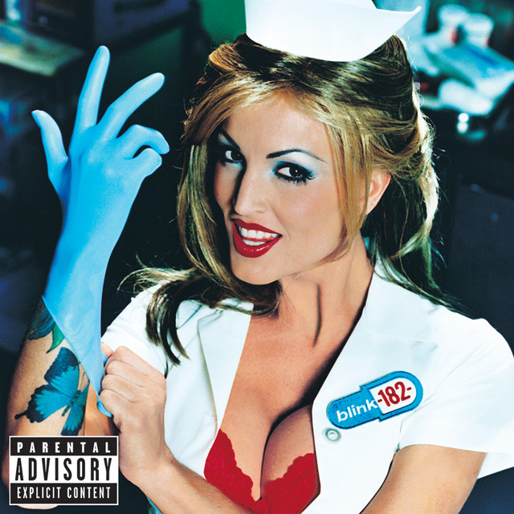
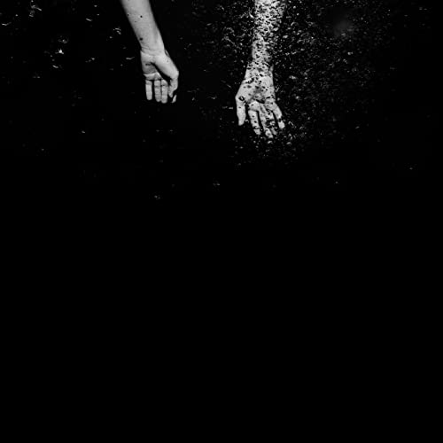

Summer Soundtrack
The Middle
Ocean Avenue
All The Small Things
Buddy Holly
Black Butterflies and Deja Vu
18
American Idiot
Hard Times
Voldemort
Stacy's Mom

Lyrics:
Stacy's mom has got it goin' on
Stacy's mom has got it goin' on
Stacy's mom has got it goin' on
Stacy's mom has got it goin' on
Stacy, can I come over after school?
(After school)
We can hang around by the pool
(Hang by the pool)
Did your mom get back from her business trip?
(Business trip)
Is she there, or is she trying to give me the slip?
(Give me the slip)
You know, I'm not the little boy that I used to be
I'm all grown up now
Baby, can't you see?
Stacy's mom has got it goin' on
She's all I want
And I've waited for so long
Stacy, can't you see?
You're just not the girl for
I know it might be wrong but
I'm in love with Stacy's mom
Stacy's mom has got it goin' on
Stacy's mom has got it goin' on
Stacy, do you remember when I mowed your lawn?
(Mowed your lawn)
Your mom came out with just a towel on
(Towel on)
I could tell she liked me from the way she stared
(The way she stared)
And the way she said
"You missed a spot over there"
(A spot over there)
And I know that you think it's just a fantasy
But since your dad walked out
Your mom could use a guy like me
Stacy's mom has got it goin' on
She's all I want
And I've waited for so long
Stacy, can't you see?
You're just not the girl for me
I know it might be wrong but
I'm in love with Stacy's mom
Stacy's mom has got it goin' on
(she's got it going on)
She's all I want and I've waited for so long
(waited and waited)
Stacy, can't you see?
You're just not the girl for me
I know it might be wrong
I'm in love with
Stacy's mom, oh, oh
(I'm in love with)
Stacy's mom, oh, oh
(Wait a minute)
Stacy, can't you see?
You're just not the girl for me
I know it might be wrong but
I'm in love with Stacy's mom
The Middle

Lyrics:
Hey, don't write yourself off yet
It's only in your head, you feel left out
Or looked down on
Just try your best
Try everything you can
And don't you worry what they tell themselves
When you're away
It just takes some time
Little girl, you're in the middle of the ride
Everything, everything'll be just fine
Everything, everything'll be alright, alright
Hey, you know they're all the same
You know you're doing better on your own (on your own)
So don't buy in
Live right now
Yeah, just be yourself
It doesn't matter if it's good enough (good enough)
For someone else
It just takes some time
Little girl, you're in the middle of the ride
Everything, everything'll be just fine
Everything, everything'll be alright, alright
It just takes some time
Little girl, you're in the middle of the ride
Everything, everything'll be just fine
Everything, everything'll be alright, alright
Whoo!
Hey, don't write yourself off yet
It's only in your head, you feel left out (feel left out)
Or looked down on
Just do your best (just do your best)
Do everything you can (do everything you can)
And don't you worry what their bitter hearts (bitter hearts)
Are gonna say
It just takes some time
Little girl, you're in the middle of the ride
Everything, everything'll be just fine
Everything, everything'll be alright, alright
It just takes some time
Little girl, you're in the middle of the ride
Everything, everything'll be just fine
Everything, everything'll be alright
Ocean Avenue

Lyrics:
All The Small Things
Lyrics:
Buddy Holly

Lyrics:
Black Butterflies and Deja Vu
Lyrics:
18

Lyrics:
American Idiot
Lyrics:
Hard Times

Lyrics:
All that I want
Is to wake up fine
Tell me that I'm alright
That I ain't gonna die
All that I want
Is a hole in the ground
You can tell me when it's alright
For me to come out
gonna make you wonder why you even try
(Hard times) gonna take you down and laugh when you cry
(These lives) and I still don't know how I even survive
(Hard times)
(Hard times)
And I gotta get to rock bottom
Walking around
With my little rain cloud
Hanging over my head
And it ain't coming down
Where do I go?
Gimme some sort of sign
You hit me with lightning
Maybe I'll come alive
gonna make you wonder why you even try
(Hard times) gonna take you down and laugh when you cry
(These lives) and I still don't know how I even survive
(Hard times)
(Hard times)
And I gotta hit rock bottom
Tell my friends I'm coming down
We'll kick it when I hit the ground
Tell my friends I'm coming down
We'll kick it when I hit the ground
When I hit the ground
When I hit the ground
When I hit the ground
When I hit the ground
gonna make you wonder why you even try
(Hard times) gonna take you down and laugh when you cry
(These lives) and I still don't know how I even survive
(Hard times) (hard times)
(Hard times) (hard times)
gonna make you wonder why you even try
(Hard times) gonna take you down and laugh when you cry
(These lives) and I still don't know how I even survive
(Hard times) (hard times)
(Hard times)
And I gotta get to rock bottom
Voldemort

Lyrics:
I remember the first night that she said
"Oh, maybe I can't do this on my own."
And despite all the reassurances and reoccurrences, you will not be alone
And I know that you're holding out for better weather
And I can't promise you that I'll be round forever
If there's one thing I know it's that we're good together
(If there's one thing I know it's that we're good together)
And I will try to hold you up through those times when you are gone
Despite the weather, it gets better
You won't do this alone (do this alone)
I remember the first night that she went
To find her little place inside this world
I won't forget the way she broke her tape down
She needed it now
She ran into it all
And I know that you're holding out for better weather
And I can't promise you that I'll be round forever
If there's one thing I know it's that we're good together
(If there's one thing I know it's that we're good together)
And I will try to hold you up through those times when you are gone
Despite the weather, it gets better
You won't do this alone